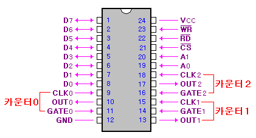
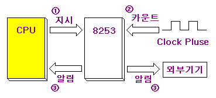
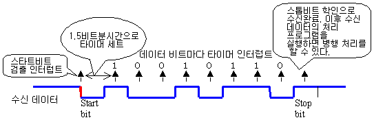

00Z80 하드웨어 발표 자료
원본 PowerPoint 슬라이드를 그림으로 옮겼습니다. 그림을 누르면 크게 볼 수 있습니다.


01시스템 구성도
원본 PowerPoint 슬라이드를 그림으로 옮겼습니다. 그림을 누르면 크게 볼 수 있습니다.


02보충 그림
원고 폴더에 함께 들어 있던 그림입니다. 8253과 RS-232 수신 회로는 제02장·제03장과 함께 보면 좋습니다.



03원본 파일 내려받기
원고는 한글 97(HWP 3.0) 형식이라 최신 한글에서 열 수 있습니다. 회로도는 OrCAD Capture 설계 파일(.DSN)이며 「관련이론(모터제어회로).hwp」는 제04장 원고의 초안입니다.
한글 원고 (HWP 3.0)
- 과제계획서.hwp (33 KB)
- 과제기능(동작)설명서.hwp (696 KB)
- 과제조립도면.hwp (931 KB)
- 관련이론(모터제어회로).hwp (56 KB)
- 관련이론(센서제어).hwp (242 KB)
- 관련이론(시리얼통신).hwp (62 KB)
- 관련이론(운용프로그램).hwp (132 KB)
- 관련이론(원보드컴퓨터).hwp (440 KB)
- 기술기능학습활동.hwp (44 KB)
- 보고서.hwp (23 KB)
- 새로운관련지식.hwp (27 KB)
- 연습과제.hwp (25 KB)
- 이론(모터).hwp (67 KB)
- 이론(센서1).hwp (51 KB)
- 작업계획서.hwp (35 KB)
- 작업분담표.hwp (23 KB)
- 작업분석표.hwp (30 KB)
- 재료 목록.hwp (54 KB)
- 차 례.hwp (29 KB)
- 평 가 표.hwp (42 KB)
- 표 지.hwp (242 KB)
- 프레임 및 바퀴제작.hwp (774 KB)
- 학습활동을위한안내질문.hwp (34 KB)
- 훈련-지도방법적절차계획.hwp (180 KB)
회로도 (OrCAD Capture)
- 8051COMPUTER.DSN (84 KB)
- Z80하드웨어.DSN (68 KB)
- Z80하드웨어.opj (1 KB)
- Z80하드웨어 회로도 진짜.DSN (359 KB)
- Z80하드웨어 회로도 진짜.opj (3 KB)
- STEPMOT.DSN (359 KB)
- STEPMOT.opj (3 KB)
발표 자료 (PowerPoint)
- Z80하드웨어.ppt (2,304 KB)
- 시스템구성도.ppt (30 KB)